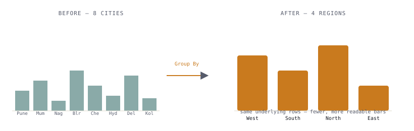
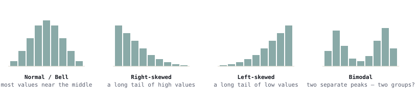

One combines categories. The other bins a number. Both exist to stop a chart from drowning in detail.
Two small features, taught together because they solve the same underlying problem from opposite directions. A takes a column that already has categories — City, Diagnosis, Department — and collapses too many of them into a few that actually mean something on a chart. does the reverse: it takes a column that has NO categories at all, just a continuous number, and manufactures ranges out of it so it can be charted like one. Neither one changes a single row of source data — both just change what the chart is allowed to look like.
Groups: turning too many categories into a few that matter

What grouping is, and why it's worth doing
Concept: A combines several existing values of a category field into one broader bucket — a new field, sitting alongside the original, that a chart can use instead. The original column is untouched; Power Query never runs, nothing in the source file changes.
Why it matters: Some category columns are genuinely too fine-grained for a summary view. A retail chain with stores in 15 cities produces a Bar Chart with 15 thin bars — technically correct, practically unreadable. Grouped down to 4 regions, the same data becomes a chart an executive can read in two seconds.
Real-world example: A Zomato ops lead doesn't plan city-by-city in a board meeting — they plan by region. The underlying orders still happened in specific cities; the chart just needs to speak at region level.
How grouping works mechanically — two ways in
Power BI offers the same feature from two different starting points — pick whichever one you're already looking at.
From a visual
- Build a Bar Chart with the category field on the Axis
- In the chart, Ctrl-click to select several bars/values at once
- Right-click the selection → Group
- Rename the new group, then repeat for the next set of values
From the Fields pane
- Right-click the field in the Fields pane
- New group
- Move values into named groups in the dialog, or leave ungrouped values as "Other"
- OK — a new field appears, e.g. "City (groups)"
Best practice: Give every group a real business name (Region, Age Band, Diagnosis Category) — the default "City (groups)" is fine as a technical field name, but the individual bucket labels inside it should read like something a manager would actually say out loud.
Before/After — Retail dataset: 15 cities → 4 regions
Business question: A Retail chain manager wants Sales by location for a leadership deck — not 15 city bars nobody outside operations recognizes, but 4 regions everyone in the room already thinks in.
Field mapping Table: Retail
| Before — Retail[City] (15 values) | After — City (groups) |
|---|---|
| Mumbai, Pune, Nagpur, Nashik | West |
| Bengaluru, Chennai, Hyderabad, Coimbatore | South |
| Delhi, Jaipur, Lucknow, Chandigarh | North |
| Kolkata, Patna, Bhubaneswar | East |
Retail[City] and Retail[Sales] both live on the one Retail table — no join needed. Download Retail_Clean.csv from the Datasets page to follow along.
Step-by-step workflow
- Load
Retail_Clean.csvand build a Bar Chart: Retail[City] into Axis, Sum of Sales into Values — this is the "before," 15 thin bars - Ctrl-click the bars for Mumbai, Pune, Nagpur, Nashik
- Right-click the selection → Group → name it "West"
- Repeat for South, North, and East
- Rename the new field from "City (groups)" to "Region" in the Fields pane for a cleaner axis title
- Swap Axis from Retail[City] to the new Region field — 15 bars become 4
Histograms: seeing the shape of one number
What a histogram actually shows
Concept: A histogram shows the distribution of ONE numeric field — how many rows fall into each of several equal-width ranges across the full spread of values, from lowest to highest.
Why it matters: An average hides everything interesting. "Average loan amount: ₹4.2 lakh" doesn't tell you whether most borrowers cluster tightly around that number, or whether a few huge loans are dragging the average up while most people borrow far less.
Real-world example: A bank's credit team doesn't just want the average loan size — they want to know whether most loans are small and a handful are huge (which changes how risk should be priced), or whether loan sizes cluster tightly around a typical amount (which means one pricing rule fits most customers).
Histogram vs. Bar Chart — the mix-up everyone makes once
Both look like a row of vertical bars, which is exactly why they get confused. The difference isn't how they look — it's where the x-axis comes from.
| Bar Chart | Histogram | |
|---|---|---|
| X-axis | An existing category already in the data (City, Product, Department) | Manufactured by — a continuous number sliced into equal-width ranges that don't exist as values in the source data |
| One bar = | One real category value | One numeric range (a "bin"), e.g. ₹2–4 lakh |
| Bar order | Any order you choose — often sorted by size | Fixed — must run low to high, since it's a number line |
| Bar spacing | Gaps between bars — categories are separate, unrelated things | Bars touch, no gaps — the ranges are continuous and adjacent |
| Answers | "How does X compare across categories?" | "How are the values of X spread out?" |
Bins and bin size — the choice that changes the story
Concept: A bin is one of the equal-width ranges a histogram slices the number line into — set either by a fixed bin size (e.g. every ₹1 lakh) or a target number of bins that Power BI divides the full range into evenly. Same underlying numbers, very different chart depending on the choice.
Too few bins and every interesting bump gets smoothed into one fat, boring bar. Too many bins and small sampling gaps in the data start looking like real dips and spikes — noise dressed up as a pattern. There's rarely one mathematically "correct" bin count; there's a bin count that shows the shape honestly and one that doesn't.
Try it below — same underlying loan amounts, three different bin counts:
When to reach for a histogram
| Business question | Reach for |
|---|---|
| "What's the average order value?" | A KPI Card — one number is exactly what's asked |
| "How are order values distributed — are most orders small with a few huge ones, or fairly consistent?" | Histogram — the question is about spread, not a single figure |
| "Are our employees' salaries clustered together or spread wide, and are there any unusual outliers?" | Histogram on HR[Salary] |
| "Which department has the highest average salary?" | A Bar Chart — that's a category comparison, not a distribution question |
The tell: if the business question has the word "average," "typical," "distributed," "spread," or "outlier" in it, a single KPI card is probably hiding the real answer — a histogram shows what the average is quietly averaging over.
Building a histogram in Power BI — and how it connects back to Groups
Classic approach — bin a field, then Bar Chart
- Right-click Banking[Loan Amount] in the Fields pane
- New group
- Group type: Bin · set Bin size (e.g. 100000) or Number of bins
- OK — a new field appears, e.g. "Loan Amount (bins)"
- Build a Clustered Column Chart: the binned field into Axis, Count of records into Values
Certified Histogram Chart (AppSource)
- Visualizations pane → "..." → Get more visuals
- Search "Histogram Chart" (Microsoft-published, Certified) — see Custom Visuals for how to vet one
- Drag the raw Banking[Loan Amount] straight into Values — no manual binning first
- Use the Format pane's bin controls to change bin count live and watch the shape change
Best practice: The classic bin-column approach is worth learning first — it's the same "New group" mechanic from the Groups section, so nothing new to remember. Reach for the certified visual once bin size needs to be tweaked live and re-tweaked, not once and done.
Reading the shape — Banking dataset: Loan Amount
Business question: A bank credit team asks — are our loans mostly one typical size, or is there a mix worth pricing differently?
Field mapping Table: Banking
Both fields live on the one Banking table — no join needed. Download Banking_Clean.csv from the Datasets page to build this yourself; treat the shape below as illustrative, not the real file's exact numbers.
Three shapes come up again and again — read in plain business language, not statistics-class language:

Bell-shaped
Most loans cluster around one typical size, tapering evenly on both sides. There's a genuine "normal" customer — one pricing rule reasonably fits most of them.
Skewed
A long tail on one side — most loans are modest, but a handful of very large ones stretch the tail right. The average sits higher than what a typical borrower actually takes.
Bimodal (two peaks)
Two separate humps instead of one — often means two different customer segments are mixed into one column, like small personal loans and large home loans counted together.
Exercises
HR dataset — Location into Region
Group HR[Location] into 3–4 named regions the way Retail[City] was grouped into 4 regions above, then build a Bar Chart of Average Salary by your new Region field.
Sales dataset — is Discount skewed?
Bin Sales[Discount] into 8 bins and build a histogram. Is the shape bell, skewed, or bimodal — and what would that mean for how discounts are actually being applied?